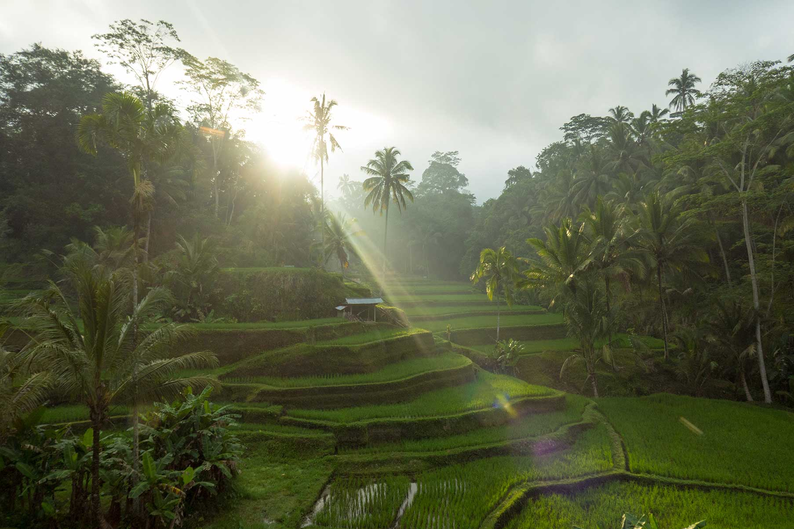

My name is Suphachai Hestmark, or call me "Top". I'm a adventurer and explorer, been travelled since July 2017. Love to experience new cultures and trying
new cuisines, meeting up with locals and going somewhere tropicals. I prefer to be at home during the summer season, and travel to somewhere else outside
of Europe during the winter season. That's how I'm keeping myself warm, haha. Even now I'm still finding myself in Asia, and planning my next trip to one of the
country that I haven't been yet. Anyway...
Here are some of my recent trip from the past few years, I choose Asia since I always keeping coming back to these country. Picture above is from Bali.